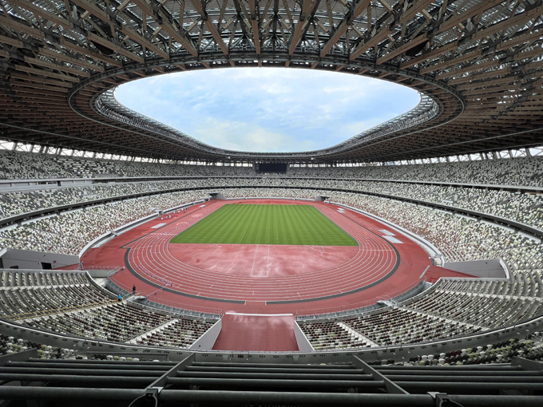
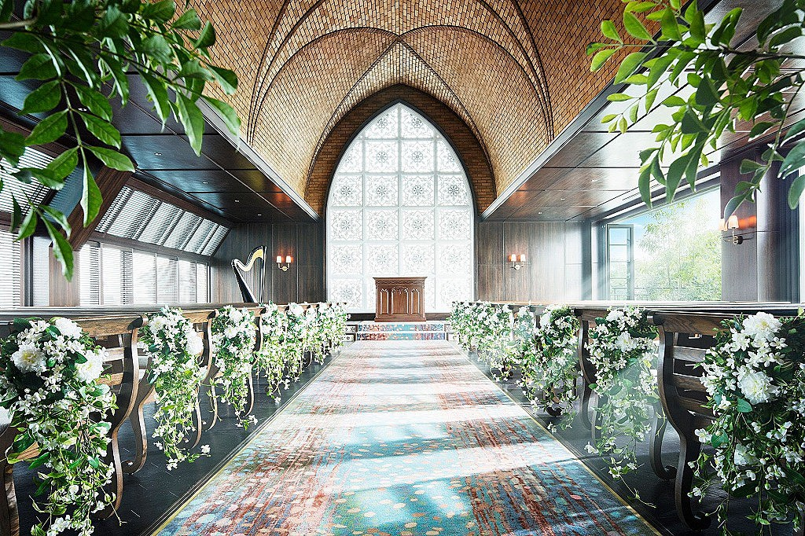

実は、こんな場面で聴いています
クラシック音楽は、実は私たちの身近なところにあります。
映画やCM、スポーツ、ゲーム、アニメなど、さまざまな場面で活躍しています。
身近なシーンから、クラシック音楽をのぞいてみませんか？
🎬 映画で
感動を形づくる、映画の音の主役
映画のあのシーン、実はクラシック音楽かもしれません。
壮大な場面や印象的なシーンを彩るクラシック音楽。
映画を通して、いつもとは少し違った角度から音楽の魅力を楽しんでみましょう。
- 『2001年宇宙の旅』の壮大な空間感
- 「運命」などのドラマティックなクライマックス
- 情景の余韻をつくる静かな旋律
📺 CMで
知らないうちに耳に残る、企業の“BGM”
CMでは、商品のイメージを一瞬で伝えるために、クラシック音楽を 使うことが多くあります。高級感・安心感・情緒のある空気感を出すのに向いています。
- ブランドイメージを整える演奏曲
- 情緒と余白を作る軽やかな旋律
- 視覚と音で印象を一気に強くする演出
🏃 スポーツで
熱をさらに高める、会場の空気づくり
スポーツの入場曲や試合の導入音楽として、クラシックはとても親しみやすく 効果的です。選手の集中力を高めるだけでなく、観客の気持ちも一緒に揺さぶります。
- 選手紹介の際に響く重厚な曲
- 観客を熱くする壮大な導入曲
- 勝負の瞬間に集中を生む演奏

🎮 ゲーム・アニメで
世界観を豊かにする、サウンドの“彩り”
ゲームやアニメでは、古典作品が背景やシーンにぴったりと馴染み、 物語の雰囲気を一段上げます。時代や舞台に合わせて、音の力が独特の魅力を生みます。
- 冒険感を強くする壮大な旋律
- 情景を静かに描く優しいメロディー
- 世界観を際立たせるドラマチックな演奏
💬 日常で
毎日の暮らしに、静かに深く届く音
料理をする時、休む時、買い物の途中、遠くの音として流れているクラシック。 それは「特別な場所」にだけある音ではなく、私たちの日常にすでに溶け込んでいます。
- お店のBGMとして、落ち着きをつくる
- 休憩中に心を整える
- 生活の中に“余白”を生む

もっと身近に、クラシックを聞いてみませんか？
気になる場面を選んで、毎日の音楽の中に少しだけ新しい発見を。
トップページへ戻る